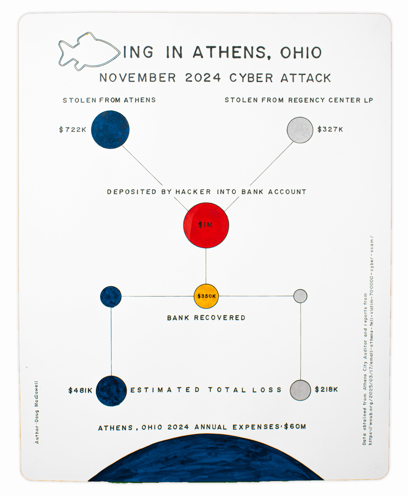
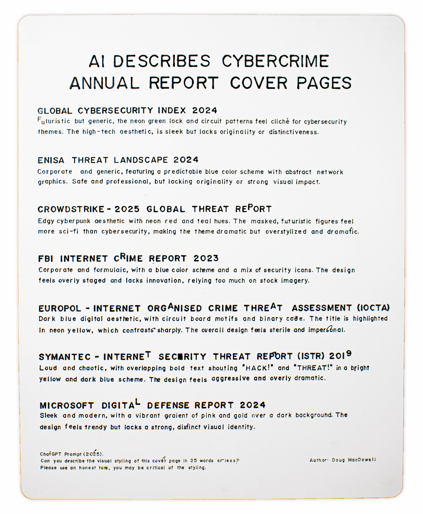
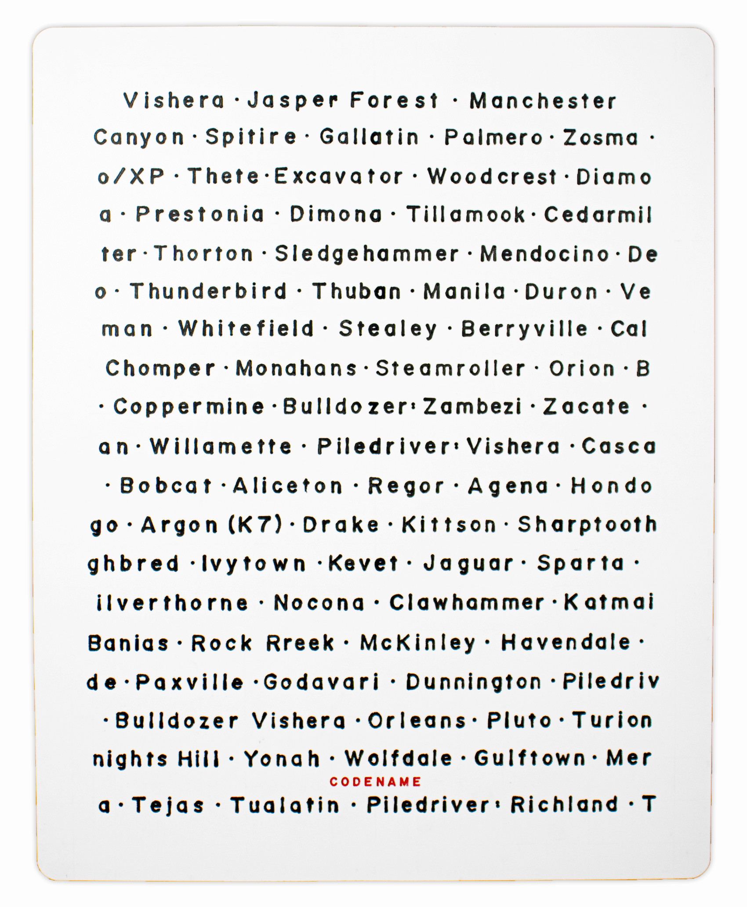

Cyber Portraits
Hand drawn data visualizations about cyber attacks
Description: A cyber attack in Athens, Ohio.
Cover page designs of cybersecurity reports.
Codenames of CPUs.
The following drawings are cyber portraits - hand drawn visuzalizations of different cyber attacks and attackers.

↑ ↑ --- Phishing in Athens, Ohio --- ↑ ↑
There is a small town in Ohio (USA) called Athens. It's rural, hilly, and home to a university. In 2024 Athens was victim of a cyber attack. The town was building a new fire station and restoring an old armory when an email with an invoice arrived from what looked like Pepper Construction (a company the city was working with). However, this email was not from Pepper - it was a fake, with one letter changed in the email address and it went unnoticed by the city. A $722,000 payment was sent to the scammer.
The hacker was also scamming another company called Regency Center LP. Funds from both the city of Athens and Regency Center LP were being deposited (slowly) into the same bank account. The account was eventually frozen and some money was recovered. However, how to split the money among the victims remains an ongoing debate.

↑ ↑ --- AI Describes Cybercrime Annual Report Covers --- ↑ ↑
Organizations like the FBI, Europol, Crowdstrike, Microsoft, and others regularly create reports about cybercrime. They include cover pages with designs trying to capture the the virtual world and the threats within. They usually aren't very good.
- Global Cybersecurity Index 2024
- Enisa Threat Landscape 2024
- Crowdstrike - 2025 Global Threat Report
- FBI Internet Crime Report 2023
- Europol - Internet Organised Crime Threat Assessment (IOCTA) 2024
- Symantec - Internet Security Threat Report (ISTR) 2019
- Microsoft Digital Defense Report 2024

↑ ↑ --- Codenames --- ↑ ↑
The most common CPU's I encounter in the world of consumer computer products are made by Intel and AMD. Each have developed a brand that appeals to different people. When CPUs are being developed they are given a codename. Intel usually chooses one that is a place like "Jasper Forest". AMD usually chooses something gnarly like "Sledgehammer".
Each cyber portrait is about 17 x 14 inches and made using graphite and ink.
Check out Curious 15 Year Gap for more hand drawn data visualizations. To see how the sausage is made, check out 50 Hours to Draw Some Lines.